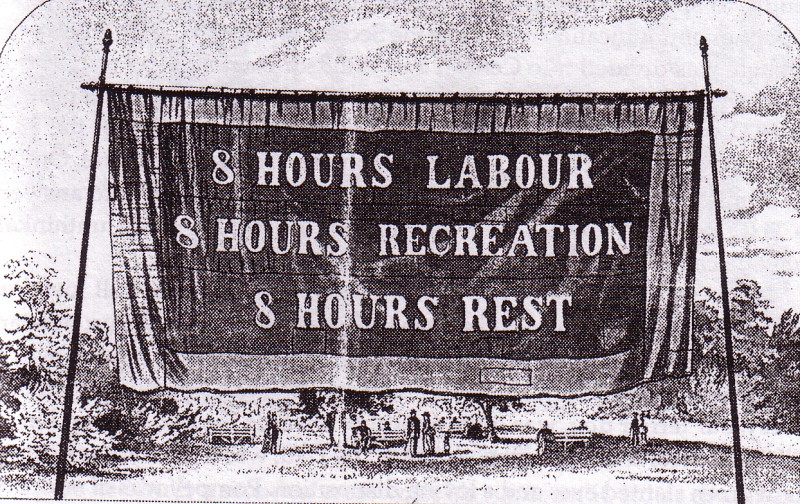
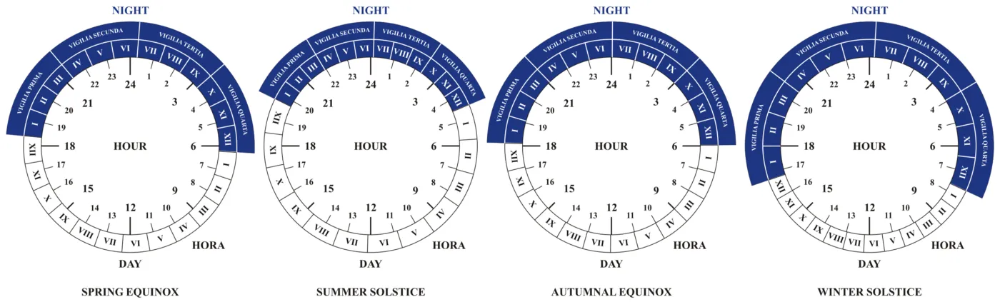

One-third of workers are ill or disabled — and this industry is shutting them out
Whether you realize it or not, you are likely interacting with ill or disabled people regularly. According to recent survey data, a high portion of the U.S. workforce reports having a disability (30 percent), even though a much smaller percentage says they’ve self-identified as disabled to their employer (only 3.2 percent). Often, these illnesses and disabilities are impossible for others to observe, so many people choose to keep their conditions a secret from managers and co-workers to avoid discrimination.
Health is not binary; it can fluctuate and is subjective. I have experienced a number of health challenges, including having brain surgery twice (once while pregnant) and one life-threatening brain infection (which can take years to recover from). Trust me when I say that you can’t assess someone’s health based on their appearance or mood. And yet, over one-third of people with disabilities say they have experienced negative bias in their current job.
I work in the tech industry, where there is an overt glorification — and in many cases, a requirement — of working unhealthily long hours. This is in spite of research showing that putting in longer hours doesn’t lead to greater productivity and instead is harmful. And when you’re ill or disabled and working in this field, the long hours can be not just counterproductive but discriminatory.

Fewer hours in the day
Many people with chronic illnesses or disabilities simply have fewer hours in the day. We may need more sleep than comparatively healthy people — and yet still wake up feeling awful — as well as have to carefully budget limited energy. Conditions often require frequent doctor visits, blood tests, MRIs, physical therapy, and other appointments, plus there’s dealing with the administrative burden of managing scheduling, billing, and insurance claims, all of which frequently involve errors.
In an episode of the podcast No End in Sight, which is focused on chronic illness, a front-end software engineer named John pinpointed his experience feeling time-crunched. John has bipolar disorder and Fabry disease, a rare genetic disorder that causes reduced kidney function and chronic pain and requires him to get regular IV infusion treatments. He described being told during a job interview at Microsoft that he needed to spend more of his free time coding:
I really felt looked down on as being lazy. And really, I’m not lazy. I have chronic illness, and I’m trying to do the best — like, I’m not trying to push myself too hard because I don’t want to throw myself into a bipolar tailspin. And I also don’t want to hurt my hands and have it be even worse to type… I was told by this abled person how to go about living assuming that I was abled, and it was just really frustrating. I’ve contributed at least a thousand hours to open source, and I’m supposed to just keep doing more. When does it end?
Natasha Walton, who founded the Tech Disability Project, has fibromyalgia and post-traumatic stress disorder. She noted on Twitter that certain aspects of the day, like sleep and fitness routines, are not optional for her. “They account for the time I spend meeting my body’s basic needs each and every day so that I can participate in the wider world,” she explained.
The tech work environment is hostile even to healthy people. The “ideal worker” in tech is in perfect health, child-free, and has no other commitments. I’ve had several jobs in tech that I could do for a time, and even do quite well, but that I knew would be unsustainable for me long-term. The question was not if I would burn out, but when. Numerous co-workers have also seemed on the brink of burnout regardless of whether they had a chronic illness. I even have tech-industry friends who developed permanent chronic illnesses while in toxic work environments.
There are companies where people like me would not be welcome based on unreasonable employee demands. Last year, Andrew Ng’s deeplearning.ai posted a controversial job ad that not only specified that employees typically spend 70–90 hours per week working and studying (later changed to 70+ hours), but that doing so is the natural consequence of believing you can change the world. Many companies operate on this assumption, even if most are not quite so frank about it.
Elon Musk posted a declaration that to change the world, people need to work 80 hours per week, peaking above 100 at times. Uber formerly had an explicit company value to “work harder, longer, and smarter” and served dinner at 8:15 p.m. “Working seven days a week, sometimes until 1 or 2 a.m., was considered normal,” said one former employee. A New York Times article about Amazon described “marathon conference calls on Easter Sunday and Thanksgiving, criticism from bosses for spotty Internet access on vacation, and hours spent working at home most nights or weekends,” as well as employees being given low-performance ratings directly after cancer treatment, major surgeries, or giving birth to a stillborn child.
The research on productivity
As much as possible, we need to get away from the shallow idea that the quantity of time worked is what matters. The tech industry’s obsession with ridiculously long hours is not only inaccessible to many disabled people and harmful to everyone’s health and relationships, but as Olivia Goldhill pointed out for Quartz at Work, research on productivity suggests it’s just inefficient:
As countless studies have shown, this simply isn’t true. Productivity dramatically decreases with longer work hours, and completely drops off once people reach 55 hours of work a week, to the point that, on average, someone working 70 hours in a week achieves no more than a colleague working 15 fewer hours.
Alex Soojung-Kim Pang’s book Rest covers the crucial role that leisure time and downtime play in our creativity, health, and productivity. Prolific, talented figures including Charles Darwin, Henri Poincaré, G.H. Hardy, mathematician Paul Halmos, Charles Dickens, and many others were known to engage in only four or five hours of highly concentrated work per day. Pang also highlights an overlooked aspect of the “rule” popularized by Malcolm Gladwell that to become an expert takes 10,000 hours of practice. Gladwell based it on psychologist K. Anders Ericsson’s study of top musical performers, but Pang observes that the top performers also slept more and took afternoon naps:
We’ve come to believe that world-class performance comes after 10,000 hours of practice. But that’s wrong. It comes after 10,000 hours of deliberate practice, 12,500 hours of deliberate rest, and 30,000 hours of sleep.
More support for rest-boosted productivity is detailed in a Harvard Business Review roundup titled “The Research Is Clear: Long Hours Backfire for People and for Companies.” It highlights a variety of other study results:
- Managers could not tell the difference between employees who worked 80-hour weeks and those who pretended to — though they still penalized employees who were open about working less.
- Overwork is linked to impaired sleep, and sleep deprivation has long been known to lengthen reaction time, interfere with problem-solving, and even induce an impairment equivalent to being drunk.
- Depression, heavy drinking, diabetes, memory problems, heart disease, and poorer judgment calls are all repercussions tied to being overworked.
- Predictable, required time off (like nights and weekends) make teams more productive.

The importance of flexible work environments
Accommodations, even simple ones, can mean a world of difference to employees with illnesses or disabilities. Brianne Benness, founder of the No End in Sight podcast mentioned above, has written about how a flexible job with remote work helped her stay employed during her at-the-time undiagnosed illness: “When I woke up in a lot of pain, I could tell my boss I was working from home… When the pain in my neck made it too distracting to sit at my desk, I could move to a couch and lie down with my head supported.”
But when Brianne switched to a job with a more rigid in-office schedule, both her health and work level plummeted. With nowhere to lie down with her laptop, she would not only get distracted by the pain but put her focus on trying to seem productive. Meanwhile, she lost energy fast during the day, struggled with brain fog, and would go to bed as soon as she got home. She nailed the conundrum in explaining, “I know that when my brain is firing on all cylinders, I can get more done in five hours than I can get done in a full week when my brain is plodding. But I don’t know how to share that value with an employer.”
The tech industry problems of exclusion, discrimination, and unhealthy work habits run deep, but there is also a widespread appetite for change.
Some business leaders and employers are recognizing the value on their own. A Harvard Business Review article details an experiment by Stanford professor Nicholas Bloom and Ctrip travel website cofounder James Liang in which they let half of Ctrip’s employees work from home for nine months. They found that the group working from home was both more productive and only half as likely to quit as other employees. Bloom said he was blown away by the results, and the benefits of flexible work were much greater than he expected.
Massive employers like PricewaterhouseCoopers are experimenting, too. PwC is the second largest professional services firm in the world, and last year, it announced a new flexible work program in which potential employees can choose how many hours per week or how many months per year they are available to work. It seems to have created a valuable appeal in recruiting. When one of the company’s leaders, Anne Donovan, shared her advice on switching to a more flexible culture, she asserted that everyone deserves the same degree of flexibility and that culture comes from the top.
We have a long way to go
In her keynote at GopherCon, Google developer advocate Julia Ferraioli pointed out that, in tech, we often make products accessible but not the processes or the teams we use to build them. True inclusion means having disabled people on your team; the people creating the technology need to be representative of the people using technology, which, increasingly, is everyone.
In previous posts, I have shared extensive research on how gender and racial bias manifest in the tech industry, including in retention, promotions, onboarding, and hiring. But in researching bias around disability in the field, I found far less, and this is in part because tech companies aren’t tracking it. When a TechCrunch reporter, who has a severe disability, asked Intel, Apple, Twitter, Facebook, Slack, Google, and Salesforce why none of them included disability in their diversity reports, the companies gave evasive, off-the-record responses. Since the zeroth step to increasing inclusion is to understand the scope and details of the problem, this is an indicator we have a long way to go.
The ideas are out there, though. Ted Kennedy Jr., an attorney and state senator who lost his leg as a child due to cancer, recently wrote about common, straightforward themes among companies that are inclusive of people with disabilities:
- They hire people with disabilities.
- They encourage and advance those employees.
- They provide accessible tools and technology and have a formal accommodations program.
- They empower those employees with mentoring and coaching initiatives (Note: Not all mentorship is the same. Research has shown that public endorsement of a mentee’s authority and championing their ideas is far more effective than advice on how the mentee should change and gain self-knowledge.)
I certainly can’t and don’t speak for everyone with chronic illnesses or disabilities, and I encourage you to listen and read the accounts of others. The tech industry problems of exclusion, discrimination, and unhealthy work habits run deep, but there is also a widespread appetite for change. Reconsider the culture at your workplace by hiring and promoting people with disabilities, de-emphasizing hours spent working in favor of quality of work, and allowing a more flexible setup.
This post was originally published Feb 12, 2019 on Medium. This is a follow-up to an_ earlier post I wrote on how the tech industry is failing people with disabilities and chronic illnesses.
Thank you to Julia Ferraioli, Jeremy Howard, and Negar Rostamzadeh for giving me valuable feedback on earlier drafts of this post.